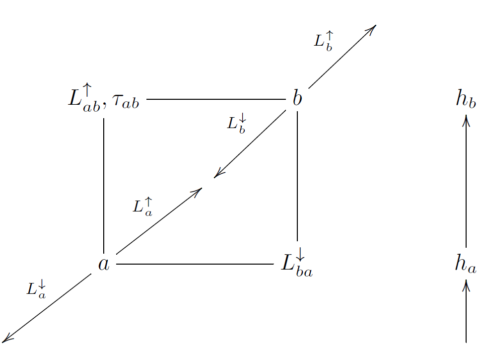

Transmittance and Path Radiance in libRadtran¶
REMs are required over the full range of SZA for all key conditions. It is possible to compute the path transmittance between target and sensor for the VZA equal to SZA (or the complement of SZA, since transmittance is the same in either direction) by taking the ratio of the direct solar irradiance at the lower height to the direct solar irradiance at the upper height. Transmittance for paths at angles between the SZA set will have to be interpolated. Horizontal paths are meaningless in this context, since the pathlength is infinite. Curve-fitting to the transmittance vector versus VZA should be considered as the relationship will be non-linear. It is also very dependent on wavelength.
The transmittances are stored as optical depth in the REM instance to facilitate interpolation with range.
Once the transmittance has been computed for all sightlines in the REM pair, the path radiance can be computed with reference to Figure DualPointRadianceDiagram. Consider two points (generally target and sensor) in the atmosphere at heights \(h_{a}\) and \(h_{b}\). The two points lie on a linear slant path of a particular zenith angle.
The radiance at point \(a\) along the slant path in the downward direction is \(L_{a}^{\downarrow}\) and the upward radiance along the slant path at point \(a\) (towards point \(b\)) is denoted \(L_{a}^{\uparrow}\) and likewise for point \(b\). The path radiance in the upward direction from \(a\) to \(b\) is \(L_{ab}^{\uparrow}\) (the arrow is actually redundant since the order of the subscripts can denote the direction) and the downward path radiance is \(L_{ba}^{\downarrow}\).The path transmittance is denoted using \(\tau\) with relevant subscripts. The path transmittance is independent of the direction (but the path radiance does depend on the direction). libRadtran can be used to compute the upward and downward radiances along the slant path at each of the two altitudes. The following equations are then easily solved for the path radiances from the environment radiances and transmittances,
The path radiances are simply
Upward radiances are the radiance values in the lower hemispheres of the REMs and downward radiances are radiance values in the upper hemispheres of the REMs. The path radiances will generally comprise a half hemisphere, above horizon and one side of the solar principal plane for downwelling path radiances and sightlines looking above horizon and another half hemisphere, below horizon and one side of the solar principal plane for sightlines looking below the horizon. These path radiances can be incorporated into a single dataset having the same size as the REM. However, it is important to remember that when looking upward, the target is at \(h_{b}\) and is therefore rendered using the REM at \(h_{b}\) and when looking downward, the target is at \(h_{a}\) and must therefore be rendered using the REM at \(h_{a}\).
The at-target radiance is computed using a raytracing engine. The camera image of the target can then be rendered using the BOSM and inserted into the sensor view.
The way forward in reaching this implementation was first to establish the runtime of a full radiant environment map with libRadtran using the Kato correlated-\(k\) parametrisation. The SZA resolution for a specific atmosphere/surface combination is an important consideration as path transmittance must be interpolated between computed SZA values. On the Icebow compute cluster (24 processors), a full REM at 128 sightlines per 180\(^{\circ}\), with 8 Kato spectral bands, 2 heights and 12 SZAs completes in under 1 minute. Compiling the results from the uvspec output files takes a further 20 seconds. This means that the scheme is certainly viable.
If, at this stage the raytracing engine cannot be used on the cluster to generate correct azimuth/elevation views of the target, the above approach can still be used to compute target illuminance, by integrating the radiant environment map over the appropriate hemisphere in the conventional way. This is an alternative to using SMARTS (and more consistent, since the atmospheric models are now uniform across target irradiance, path radiance and transmittance computations).
If targets are completely lambertian and self-shadowing of the target can be neglected, there are methods of reducing the REM to an Irradiance Environment Map (IEM) and decomposing the IEM into a small number of spherical harmonic coefficients. This allows very rapid rendering of convex, lambertian targets. Computation of spherical harmonic coefficients may have to be mediated through resampling to another directional scheme, such as HEALPix.
Thus, all of the radiative transfer could, in principle, be done using libRadtran, which is a lot easier to set up than MODTRAN and also faster, especially if the Kato correlated-\(k\) approach is adopted. The only limitation with Kato is that the spectral sensitivity of the sensor can only be expressed as a linear combination of the bands in Table [tab:Kato-Correlated-k-Bands]. The libRadtran driver utility (uvspec) allows one to specify a sub-range of correlated-\(k\) bands using the wavelength_index directive. Only 8 of the 32 Kato bands fall into the spectral region of interest in this problem. These are bands 13 to 20, giving a spectral coverage of 605nm to 889nm.